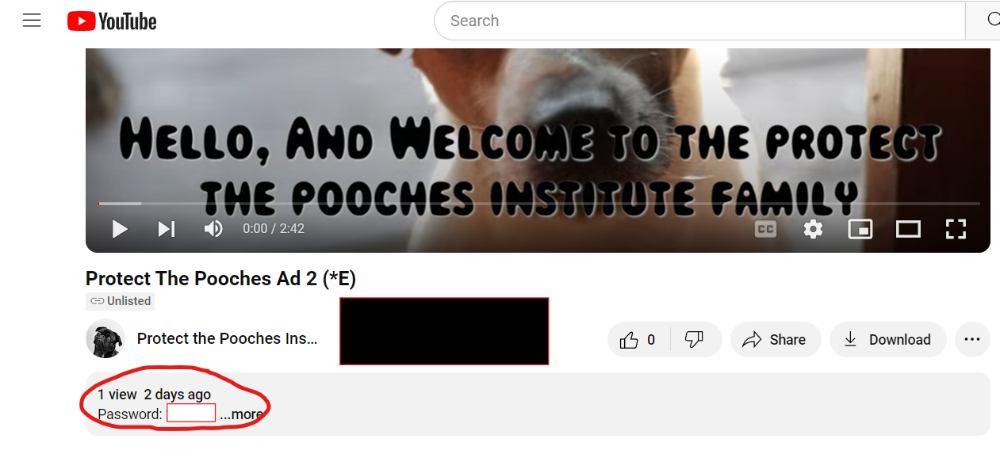

This is a Basic ARG about a charity with a suspiciously high mortality rate for interns
An ARG, or Alternate Reality Game, is a type of interactive narrative that combines elements of storytelling, gaming, and real-world experiences. Unlike traditional video games or other forms of entertainment, ARGs blur the lines between fiction and reality, inviting participants to engage with a story that extends beyond a single platform or medium.
This is a simple one, where you can go through it on your phone and doesnt require and complicated techniques.
In this case the ARG is a Website. And in this website there are hidden links to youtube videos. By clicking on certain parts of this website you will be taken to hidden youtube videos.
These series of videos and links will eventually lead you to an ending titled Sweet Memories
Inside the videos and inside the descriptions you will find hints on how to progress further onto the site and find more videos. So there will be clues inside both the videos and descriptions to them
For example the link bellow will take you to a youtube video, this youtube video will have a link in the description that will take you to the home page of the website.